Group Meeting
Scott Saunders
09_27_19
library(tidyverse)
library(cowplot)
library(viridis)
library(knitr)
library(kableExtra)
knitr::opts_chunk$set(tidy.opts=list(width.cutoff=60),tidy=TRUE, echo = TRUE, message=FALSE, warning=FALSE, fig.align="center")
source("../../IDA/tools/plotting_tools.R")
theme_set(theme_1())Page 1
plot_eDNA_hier <- readRDS("plot_eDNA_hier")
plot_eDNA_hier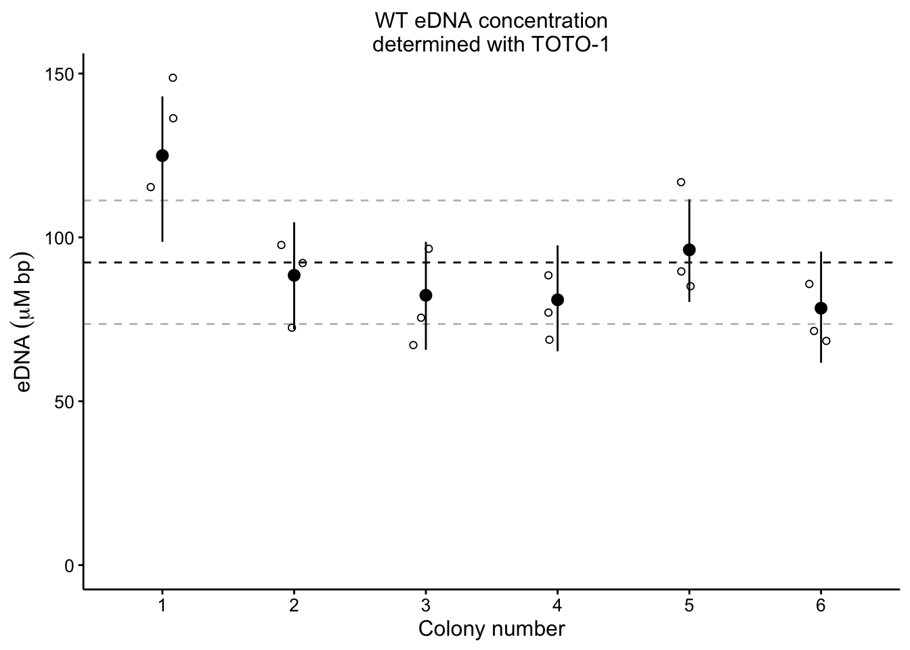
plot_etbr_redox <- readRDS("plot_etbr_redox")
plot_etbr_redox
plot_wt_etbr <- readRDS("plot_wt_etbr")
plot_dphz_etbr <- readRDS("plot_dphz_etbr")
plot_wt_pi <- readRDS("plot_wt_pi")
plot_dphz_pi <- readRDS("plot_dphz_pi")
plot_wt_etbr
plot_dphz_etbr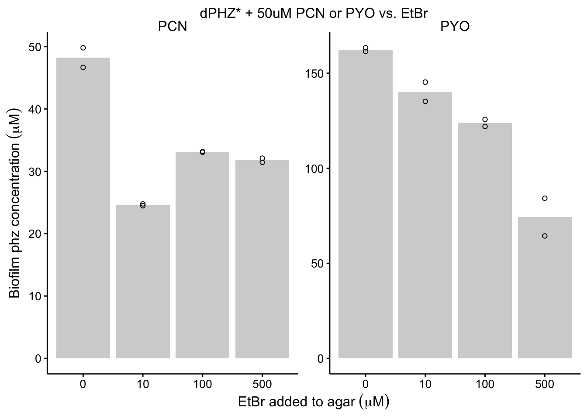
plot_wt_pi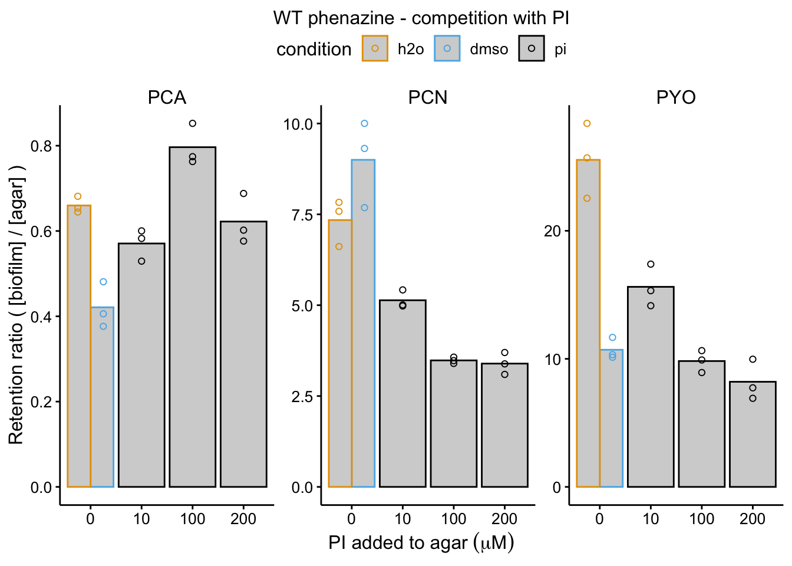
plot_dphz_pi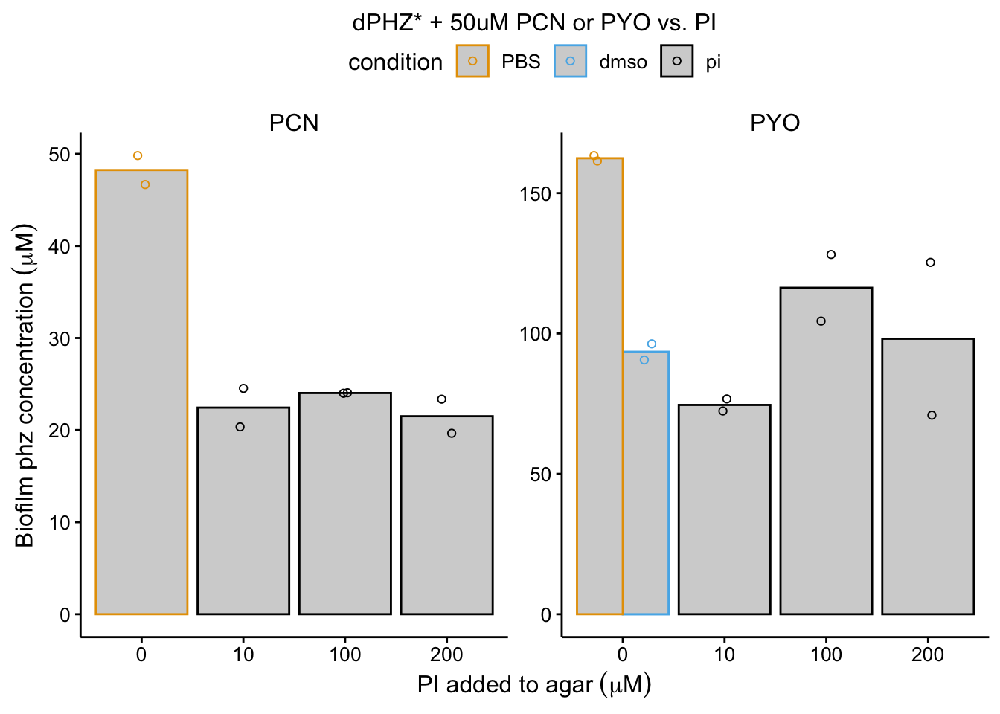
fig_grid_1 <- plot_grid(plot_etbr_redox, plot_eDNA_hier, plot_wt_etbr,
plot_dphz_etbr, plot_wt_pi + guides(color = F), plot_dphz_pi +
guides(color = F), align = "hv", axis = "tblr", ncol = 2,
scale = 0.95, rel_widths = c(1.3, 1), labels = "AUTO")
fig_grid_1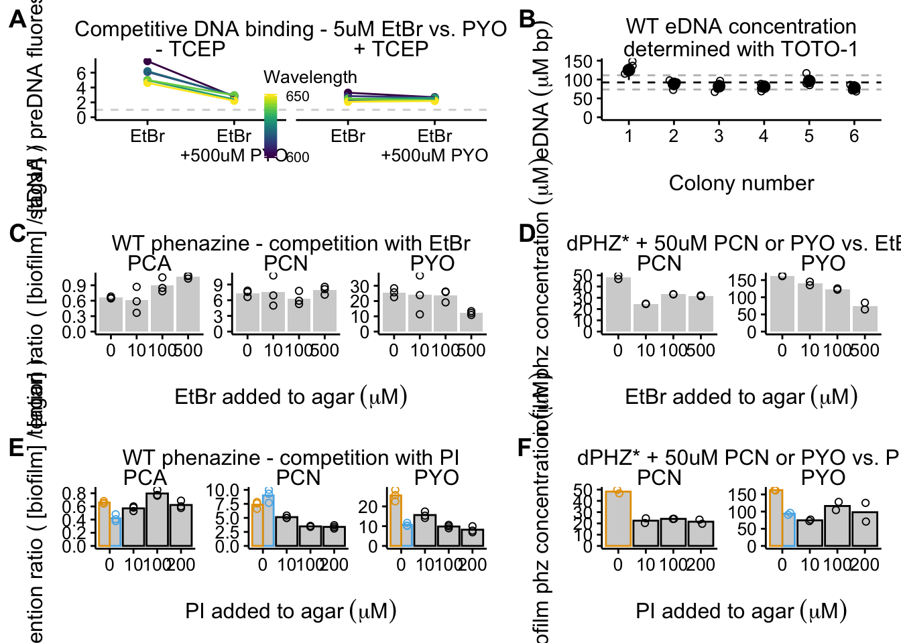
# save_plot('2019_09_27_fig_grid_1.pdf',fig_grid_1,
# base_width = 7.5, base_height = 9)Page 2
plot_pyo_ox <- readRDS("plot_pyo_ox")
plot_pyo_red <- readRDS("plot_pyo_red")
plot_rxn_pct <- readRDS("plot_rxn_pct")
plot_pyo_ox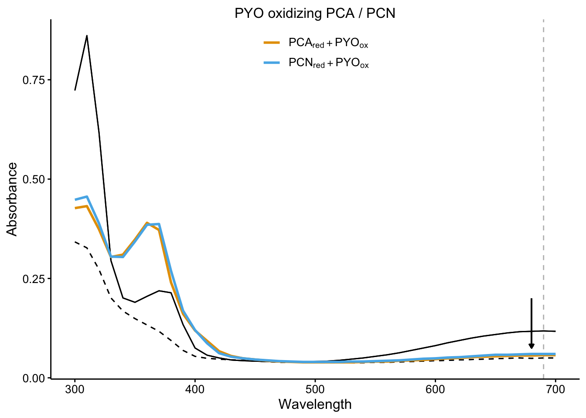
plot_pyo_red
plot_rxn_pct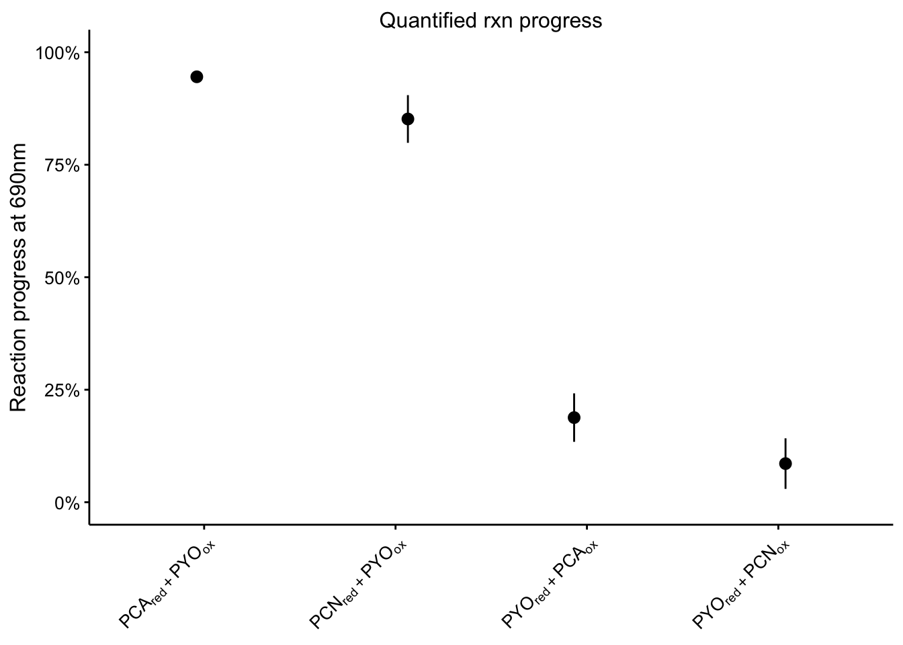
plot_liquid_raw <- readRDS("plot_liquid_raw")
plot_colony_raw <- readRDS("plot_colony_raw")
plot_colony_bgSub <- readRDS("plot_colony_bgSub")
plot_liquid_raw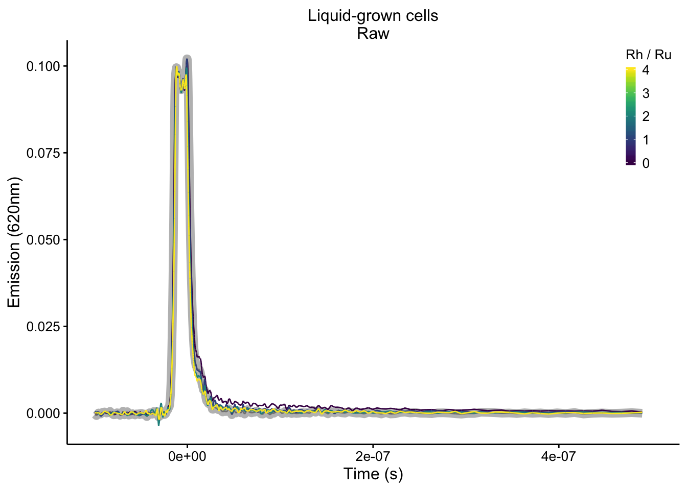
plot_colony_raw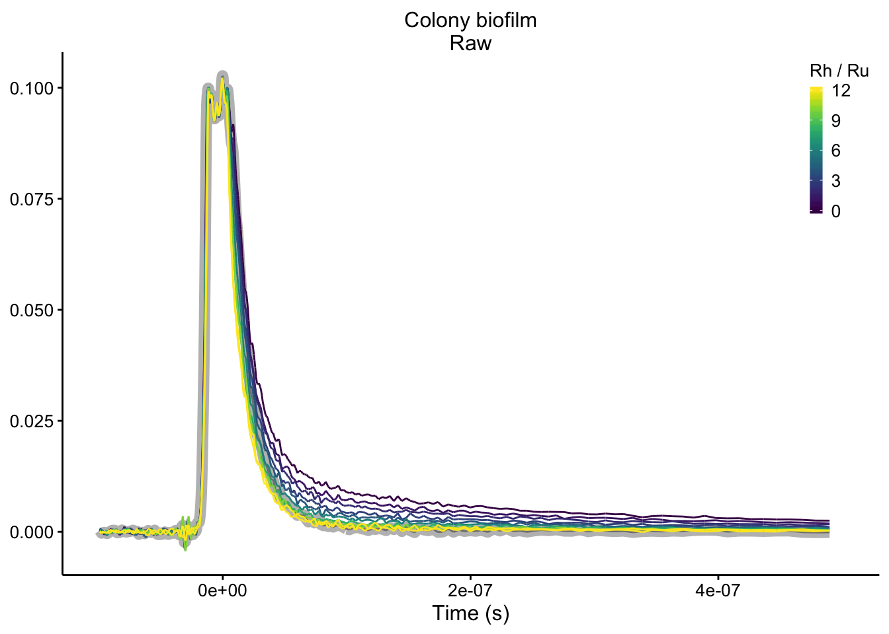
plot_colony_bgSub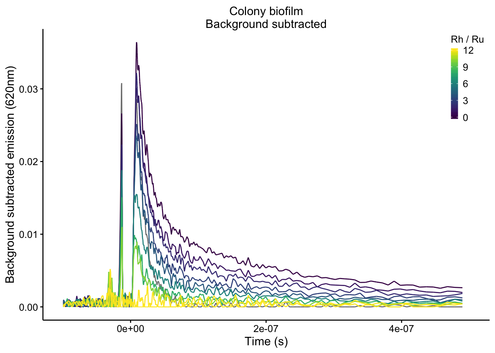
top_title <- ggdraw() + draw_label("Interphenazine electron transfer in solution",
fontface = 'bold', x = 0.5, hjust = 0.5) +
theme(
# add margin on the left of the drawing canvas,
# so title is aligned with left edge of first plot
plot.margin = margin(0, 0, 0, 7)
)
top_plots_grid_2 <- plot_grid(plot_pyo_ox, plot_pyo_red, plot_rxn_pct, ncol = 3, scale = 0.95, rel_widths = c(1,1,1), labels = 'AUTO')
top_grid_2 <- plot_grid(top_title, top_plots_grid_2, ncol = 1, rel_heights = c(0.1,1))
top_grid_2
#save_plot('2019_09_27_top_grid_2.pdf',top_grid_2, base_width = 7.5, base_height = 4.5)
bottom_title <- ggdraw() + draw_label("Time resolved emission w/ DNA CT metal complexes",
fontface = 'bold', x = 0.5, hjust = 0.5)
bottom_plots_grid_2 <- plot_grid(plot_liquid_raw, plot_colony_raw, plot_colony_bgSub, ncol = 3, scale = 0.95, rel_widths = c(1,1,1.25), labels = c('D','E','F'))
bottom_grid_2 <- plot_grid(bottom_title, bottom_plots_grid_2, ncol = 1, rel_heights = c(0.1,1))
bottom_grid_2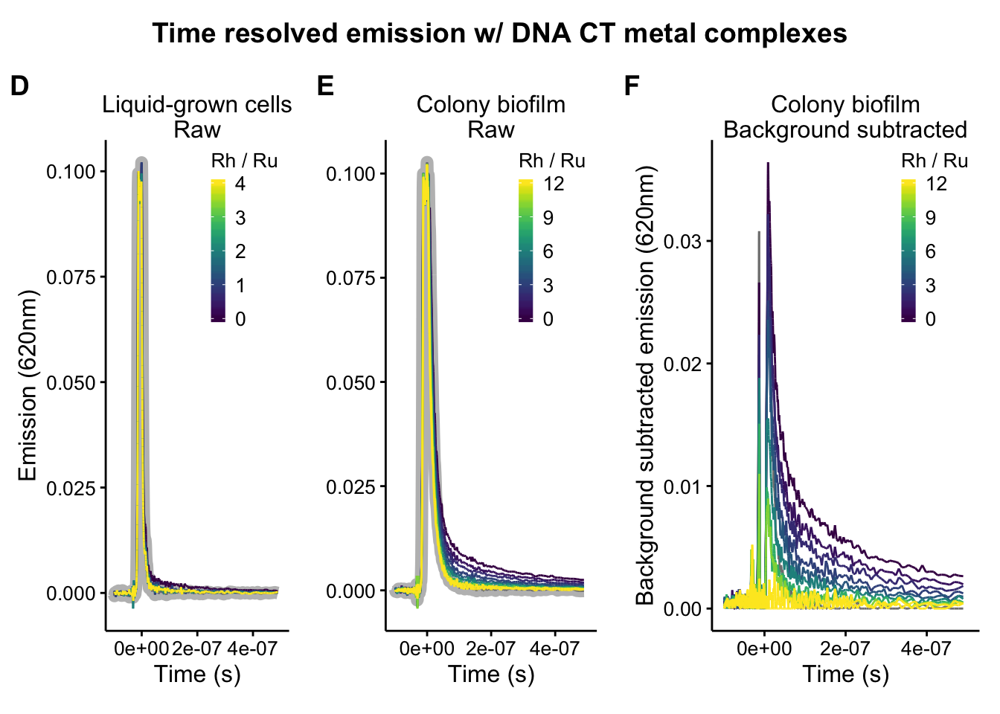
#save_plot('2019_09_27_bottom_grid_2.pdf',bottom_grid_2, base_width = 7.5, base_height = 4.5)
# fig_grid_2 <- plot_grid(plot_pyo_ox, plot_pyo_red, plot_rxn_pct,
# plot_liquid_raw, plot_colony_raw, plot_colony_bgSub,
# align = 'hv', axis = 'tblr', ncol = 2, scale = 0.95)
#
#
#
# save_plot('2019_09_27_fig_grid_2.pdf',fig_grid_2, base_width = 7.5, base_height = 9)